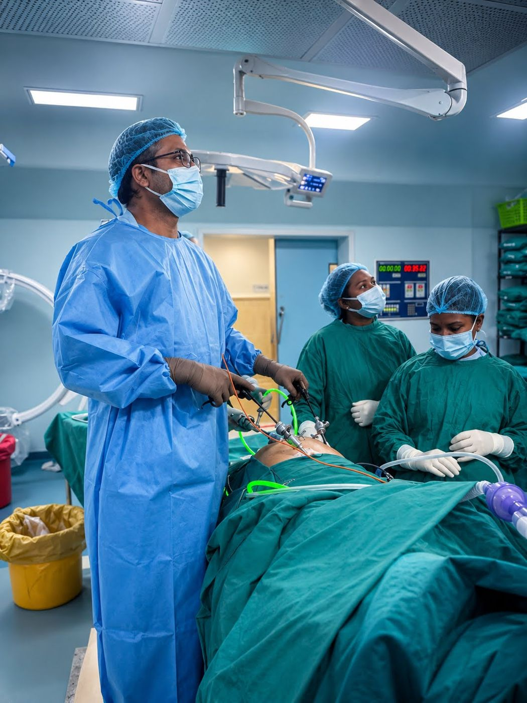

Varicose veins and venous reflux
Varicose veins are enlarged surface veins. Venous reflux means blood flows backwards through faulty valves. Duplex ultrasound helps identify the veins involved; all leg swelling is not caused by varicose veins.
Understand your options · Plan your visit
Visible leg veins, aching, swelling or skin changes? Start with an assessment of the cause and discuss whether vein treatment could help.
पैरों की नसें फूलना (वेरिकोज वेन्स) में नसें उभरी और टेढ़ी दिखती हैं और पैर भारी लगते हैं। डॉपलर जांच और RFA (रेडियोफ्रीक्वेंसी एब्लेशन) के बारे में परामर्श लें।
Understanding the condition
Varicose veins are swollen, twisted veins under the skin, usually in the legs. They develop when valves inside the veins stop working properly, so blood pools in the leg. Standing for long hours, pregnancy, family history and increasing age make them more likely.
A bleeding vein needs urgent care. Sudden painful swelling of one leg, chest pain or breathlessness needs emergency assessment.
Why they form
Leg veins carry blood upward to the heart against gravity. Small one-way valves inside them stop the blood from falling back down.
When these valves weaken, blood leaks backward and pools in the lower leg. This is called venous reflux. The raised pressure stretches the veins, so they bulge and twist, and pushes fluid and pigment into the skin. Because damaged valves do not repair themselves, varicose veins tend to slowly worsen unless the faulty vein is treated.
The procedure
Dr. Bharti performs RFA at Samford Super Speciality Hospital in the operation theatre, under ultrasound guidance and local anaesthesia. RFA is a modern alternative to open vein stripping and is comparable to laser (EVLT) treatment.
The first consultation
Varicose veins are enlarged superficial veins, usually in the legs. They may cause aching, heaviness, itching, swelling or skin changes. A duplex ultrasound can assess blood flow and help guide treatment. A photograph alone cannot establish which procedure you need.
Bring any venous Doppler or duplex report, previous vein-treatment records and your medicine list. Mention any previous blood clot and any leg wound. You can book the first consultation without uploading leg photographs.
Bring a list of medicines and allergies, and the questions you would like answered.
Medical names, explained simply
Varicose veins are enlarged surface veins. Venous reflux means blood flows backwards through faulty valves. Duplex ultrasound helps identify the veins involved; all leg swelling is not caused by varicose veins.
A thin catheter delivers controlled heat inside a faulty vein to close it. It is a vein treatment, not removal of the entire network of leg veins.
Surgical tying off and removal of a faulty vein are other approaches in Dr. Bharti’s operative experience. The operation may include treatment at the junction where a surface vein joins a deeper vein. The assessment determines which approach is appropriate.
The procedure is chosen after assessment. A technique listed here is not suitable for every patient.
An individual treatment plan
No. Symptoms, skin changes, ultrasound findings and your preferences matter. Activity, skin care and compression may be discussed where appropriate.
RFA uses a catheter and heat to close a faulty vein. Dr. Bharti performs RFA at Samford Super Speciality Hospital, Ranchi. Suitability depends on the scan and clinical assessment.
Depending on the findings, alternatives can include foam sclerotherapy or surgery. Discuss which options are suitable and where the recommended treatment can be provided.
These are general options, not a recommendation for an individual patient. Your examination and reports guide the advice.
Already advised surgery?
Bring your reports and the recommendation you received. Understand your diagnosis, the options that may suit you and the questions to ask before deciding.
Planning ahead
After RFA, patients usually go home the next day, and walking is encouraged from the day of treatment. Soreness and bruising can occur. Your team will explain compression, activity, travel and follow-up based on the treatment performed. Additional treatment may be needed for remaining or recurrent veins.
Informed decisions
Ask about bruising, inflammation, skin changes, numbness, burns and blood clots. Soreness and bruising can occur, and varicose veins can recur or develop elsewhere.
Already advised a procedure? Plan a second opinion →Ask for a clear estimate
A useful estimate follows clinical assessment and review of the duplex findings. Ask for the cost of the proposed treatment rather than relying on a price for an unspecified “laser” procedure.
Ask what is included and excluded, and how unplanned treatment would be charged.
Insurance and Ayushman Bharat: at Samford Super Speciality Hospital, where Dr. Bharti operates, cashless treatment is available under major health-insurance and TPA plans, Ayushman Bharat and the Jharkhand Rajya Karmi Swasthya Bima Yojana (state employees’ health insurance). Eligibility depends on your policy or card and is confirmed by the hospital insurance desk.
Your surgeon

Your questions
Write down anything you are unsure about and bring it to your consultation.
These are usually varicose veins caused by leaking valves. After examination and a venous Doppler scan, treatment may include compression, radiofrequency ablation (RFA), foam sclerotherapy or surgery. Dr. Vikeerna Bharti performs RFA at Samford Super Speciality Hospital, Ranchi. Call 62060 91982.
RFA is done under local anaesthesia. Most patients feel the anaesthetic injections and a mild warmth or pressure; some soreness or bruising is common for a few days afterwards.
RFA is usually performed through a small puncture or access opening and a thin sheath; additional vein procedures may need small incisions. The puncture is covered with a small dressing.
RFA leaves only small puncture marks, which usually fade over time. Open vein surgery leaves small scars at the incision sites.
After RFA at Samford, patients usually go home the next day. You can walk on the day of treatment.
Many patients wear stockings for a short period after treatment. Whether and how long you need them depends on your treatment and findings; your surgeon will advise you.
The cost depends on which veins are affected, one or both legs, the procedure and consumables, and the hospital stay. An estimate is given after examination and a venous Doppler scan. Cashless treatment is available at Samford under major health-insurance and TPA plans, Ayushman Bharat and the Jharkhand Rajya Karmi Swasthya Bima Yojana; the hospital insurance desk confirms eligibility.
The treated vein usually stays closed, but new varicose veins can develop over the years, and some patients need further treatment. Staying active, keeping a healthy weight and attending follow-up help.
Many varicose veins cause only symptoms, but they can progress to skin darkening, swelling, eczema, ulcers or bleeding, and sometimes to blood clots. Assessment helps decide whether and when treatment is needed.
डॉ. विकीर्ण भारती रांची के सैमफोर्ड सुपर स्पेशियलिटी हॉस्पिटल, कोकर चौक में डॉपलर जांच के बाद वेरिकोज वेन्स का रेडियोफ्रीक्वेंसी एब्लेशन (RFA) करते हैं। इसमें सर्जिकल चीरे की जगह सुई से नस तक पहुँचा जाता है और आमतौर पर अगले दिन छुट्टी मिल जाती है। संपर्क: 62060 91982।
Varicose veins are treated by surgeons who perform vein procedures. Dr. Vikeerna Bharti, a general and laparoscopic surgeon, performs RFA and vein surgery at Samford Super Speciality Hospital and consults at Ranchi Dental and Polyclinic, Bariatu (Mon–Sat 9–10 AM and 5–7:30 PM) and Samford Super Speciality Hospital, Kokar Chowk (Mon–Sat 11 AM–5 PM). Bring any venous Doppler report. Call 62060 91982.
Coverage depends on your policy or scheme. At Samford Super Speciality Hospital the insurance desk confirms eligibility for major health-insurance and TPA plans, Ayushman Bharat and the Jharkhand Rajya Karmi Swasthya Bima Yojana (state employees’ health insurance).
Take the next step
Choose your clinic and prepare an appointment request. Review the message and press Send in WhatsApp.
You can visit during the listed OPD hours. For Garhwa, please check the visiting date before travelling.
Further reading
Content updated 10 October 2026. General patient information; an examination is needed for personalised advice.
वेरिकोज वेन्स में पैरों की नसें नीली, फूली और टेढ़ी दिखती हैं, क्योंकि नसों के वाल्व कमजोर हो जाते हैं। इससे पैरों में भारीपन, दर्द, सूजन, खुजली और टखने के पास त्वचा पर कालापन आ सकता है। डॉपलर जांच के बाद डॉ. विकीर्ण भारती सैमफोर्ड हॉस्पिटल, रांची में रेडियोफ्रीक्वेंसी एब्लेशन (RFA) करते हैं — यह सुई के छेद से की जाने वाली प्रक्रिया है और आमतौर पर अगले दिन छुट्टी हो जाती है। नस से खून बहे या एक पैर में अचानक दर्दनाक सूजन हो तो तुरंत अस्पताल जाएँ। सैमफोर्ड हॉस्पिटल में आयुष्मान भारत, राज्य कर्मी स्वास्थ्य बीमा योजना (RKSBY) और प्रमुख स्वास्थ्य बीमा/TPA से कैशलेस इलाज की सुविधा है (पात्रता अस्पताल का बीमा डेस्क तय करता है)। परामर्श: बरियातू (मणिपाल हॉस्पिटल के पास) सोमवार–शनिवार सुबह 9–10 और शाम 5–7:30 बजे; सैमफोर्ड सुपर स्पेशियलिटी हॉस्पिटल, कोकर सुबह 11 से शाम 5 बजे। संपर्क: 62060 91982।